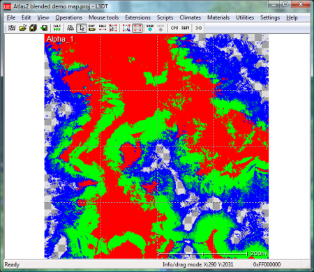

Hello everyone,
nice to meet you

At first I would like to say I got really impressed with the engine, nicely written and powerful.
I started to experiment with it - I made my own terrain generator (I create heightmap data, store it to Image class and supply to Terrain to get it generated).
However, in examples I noted that there is just one call for terrain to SetMaterial. What I would like to achieve is creating a terrain with different textures for different heights, eg. water, mountains, planes, etc.
How do I do that - is it possible to set terrain texture/material depending on it’s height parameter or I have to create few instances of Terrain, each with different material?
Thank you in advance,
Konrad
Heightmap with different terrain textures

Hey there Konrad,Welcome to forums!
You can set different textures by generating Terrain Weights or Terrain Alpha Maps. Most terrain generator tools already has this feature to produce this type of map like the free L3DT Standard Edition by BundySoft (generate Alpha Layer):
L3DT Standard Edition
bundysoft.com/L3DT/downloads/standard.php

Check out the example water demo or you can find the example texture under /Data/Texture/TerrainWeight.dds

Standard Urho terrain technique uses color texture to mix 4 detail textures. So you have two options:
- Generate this color texture, painting each height to it’s corresponding color, and then feeding it to standard TerrainBlend material.
- Create your own terrain shader, that will use vertex positions to mix detail textures.
Thank you guys for help, I check it out
Just one small question - I looked at
- Terrain.xml
- TerrainBlend.xml
- TerrainBlend.glsl
My question is -> how does the engine know which texture goes for which pixel value in TerrainWeights? As far as I see it’s not defined anywhere, Terrain.xml just says unit=0/1/2/3, setting textures for them, but there is no setting that if (pixelValue > x && pixelValue < y) { useTexture1(); }
Is it done in shader?
Also, about shader, I tried to find a reference to it in .xml, but there is none - is engine using by default same shader name as Technique name? There is TerrainBlend.xml and TerrainBlend.glsl, does it work that way?
Thank you for help!
Bests,
Konrad
Hey,
so, as far as I get it, in TerrainWeights.dds r stands for texture 1, g is 2 and b goes for 3?
What about dynamic heightmap, can I attach this .xml to my in-code generated heightmap?
Also, regarding naming, is it like I wrote above, XYZ.xml gets XYZ.glsl?
Thank you for help,
With best regards,
Konrad
No, in TerrainBlend.xml first line:
<technique vs="TerrainBlend" ps="TerrainBlend">Which means: vertex shader - TerrainBlend, pixel shader TerrainBlend.